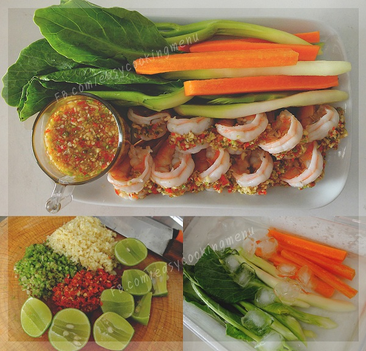

กลับสู่หน้าแรก
วิธีการทำกุ้งมะนาว

ส่วนผสม กุ้งมะนาว
- กุ้งขาว (แกะเปลือกผ่าหลัง)
- รากผักชีสับละเอียด 3 ช้อนโต๊ะ
- กระเทียมสับละเอียด 3 ช้อนโต๊ะ
- พริกขี้หนูสับละเอียด 2 ช้อนโต๊ะ
- น้ำมะนาว 3 ช้อนโต๊ะ
- น้ำปลา 3 ช้อนโต๊ะ
- น้ำตาลทราย 1 ช้อนชา
- ก้านคะน้าและแครอท แช่น้ำเย็นจัด
วิธีการทำ กุ้งมะนาว
- ลวกกุ้ง โดยตั้งน้ำให้เดือดจัด ใส่กุ้งลงไปลวก พอกุ้งเริ่มเปลี่ยนสี หรือประมาณ 5-10 วินาที ให้รีบตักขึ้นทันที จะสุกพอดีและกุ้งไม่หด (ในน้ำลวกกุ้งใส่ใบโหระพาไปนิดจะหอมมากค่ะ ^^)
- ทำน้ำจิ้ม โดยนำน้ำมะนาว น้ำปลา และน้ำตาลทราย คนผสมให้น้ำตาลละลาย จากนั้นชิมรส ถ้าจัดเกินไปจะเติมน้ำซุปจากการลวกกุ้งนิดหน่อยก็ได้ค่ะเมื่อได้รสที่ชอบแล้ว ใส่กระเทียมรากผักชี และพริกขี้หนูสับตามลงไป เสิร์ฟคู่กับก้านคะน้า และแครรอทแช่เย็น